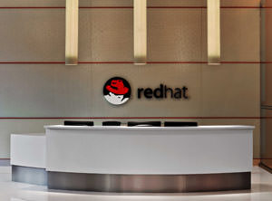

Este texto foi originalmente produzido pelos integrantes do grupo para fins de estudo e usado para a produção de trabalho escolar, portanto a profundidade é mínima em texto, confira a fonte de pesquisa para um estudo mais aprofundado.
No dia 8 de Maio de 2019 a empresa Red Hat, Inc. Líder global no fornecimento de soluções open source, anunciou que mais de 1.000 clientes estão usando o Red Hat OpenShift Container Platform, consolidando a Red Hat como a companhia líder em Kubernetes de cloud híbrida e empresariais. Este marco aconteceu quando o Red Hat anunciou o Red Hat OpenShift 4, o que na época era a próxima geração de sua confiável plataforma de Kubernetes empresariais, para entregar a simplicidade típica da cloud com operações full-stack automatizadas por toda a cloud híbrida.
A 451 Research estima que o mercado de softwares para aplicações containerizadas deve ultrapassar os US$5,5 bilhões em 2023, crescendo a uma taxa composta anualizada de 28% 1.
Os clientes do Red Hat OpenShift representam companhias que estão adotando containers e Kubernetes para suas infraestruturas híbridas. O Red Hat OpenShift está impulsionando clientes de todo o mundo e todos os setores. Indústrias como a automotiva, de serviços financeiros, hotelaria, logística, varejo, viagens, telecomunicações, agências governamentais e outros confiam no OpenShift como sua plataforma de Kubernetes. Clientes como a Cathay Pacific, Copel Telecom, Macquarie Bank, Paychex, Porsche Informatik, Via Varejo e X by Orange estão entre os que estão adotando Red Hat OpenShift, além dos vencedores do Red Hat Innovation Awards deste ano: BP, Deutsche Bank, Emirates NBD, HCA Healthcare and Kohl’s. Quase 50% das principais companhias da Fortune 100 estão usando o Red Hat OpenShift 2. Quase 30% das empresas da Fortune Global 500 usam o OpenShift.